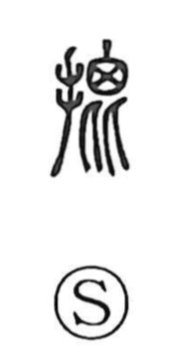

批

Kun: | On: hi
to criticize ・ to evaluate ・ to slap
Explanation
A phono-semantic character: the hand element 扌 marks an action done with the hand, while 比 functions as the phonetic, giving the on-reading hi and suggesting the idea of setting things side by side to compare. In early texts such as the Zuozhuan (批而殺之), 批 means to strike or slap—an emphatic hand action. From the sense of pointing out and attacking a fault, the character came to mean criticizing and judging, a meaning that endures in compounds like 批判, 批正, 批評, and 批難, which involve evaluation, correction, and censure.